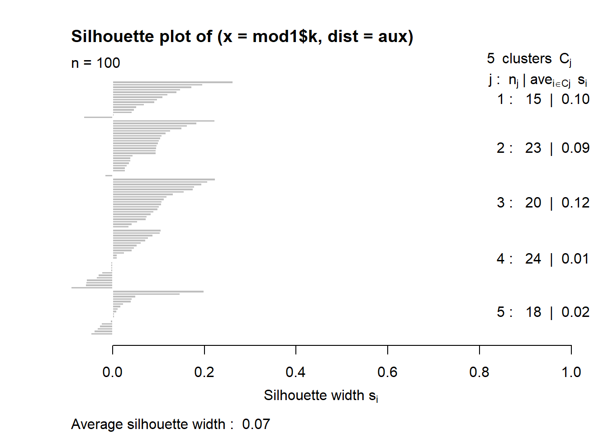
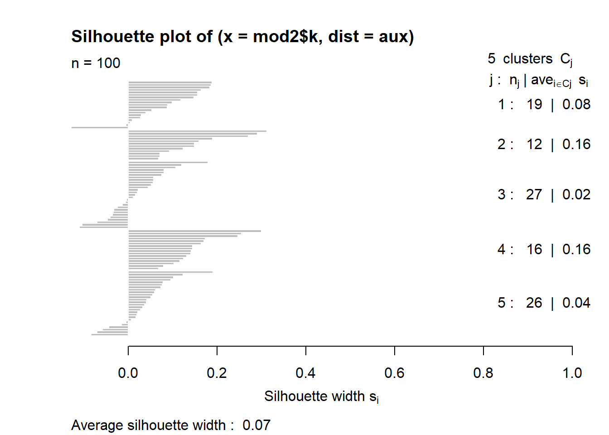
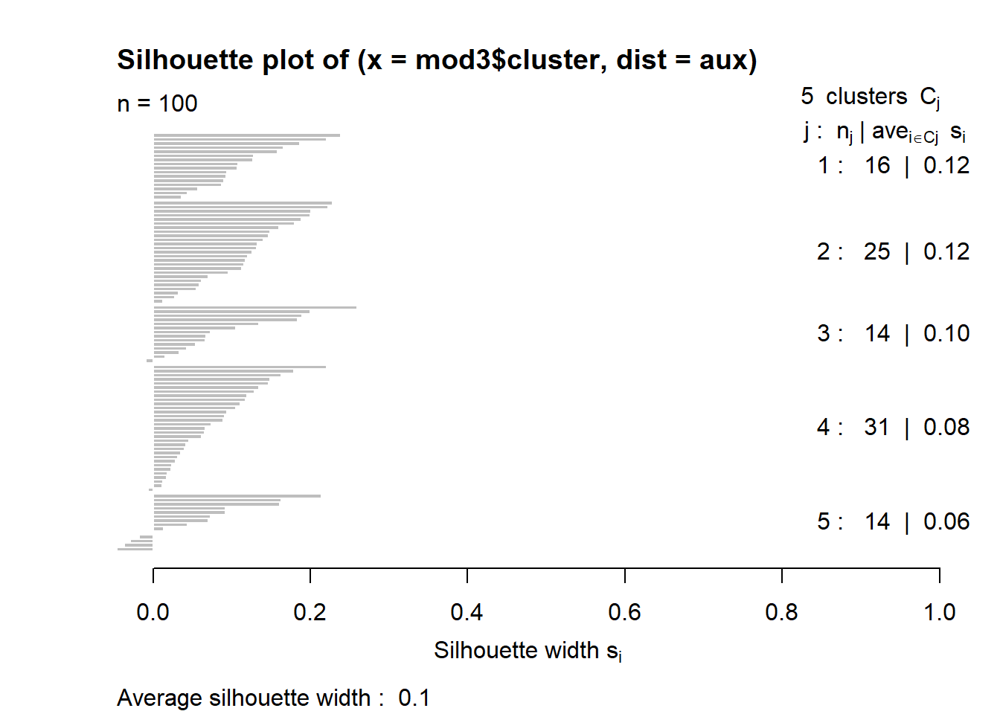
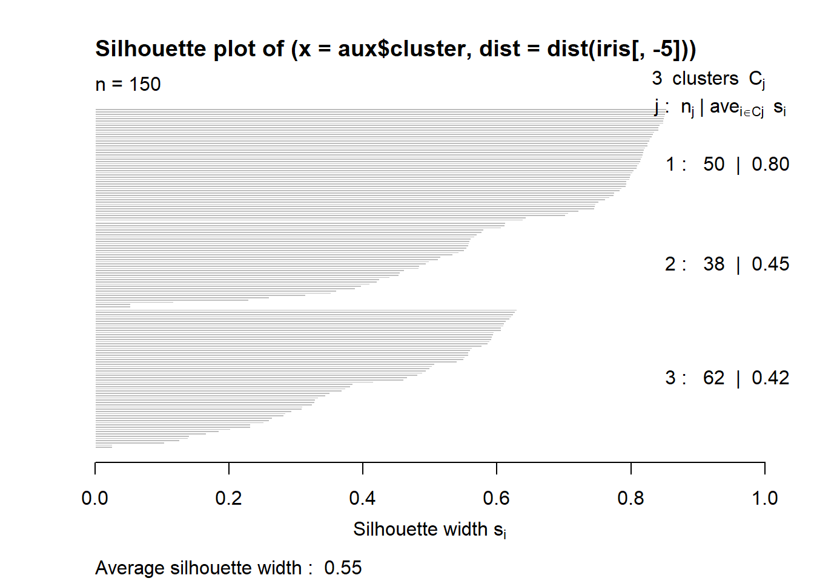
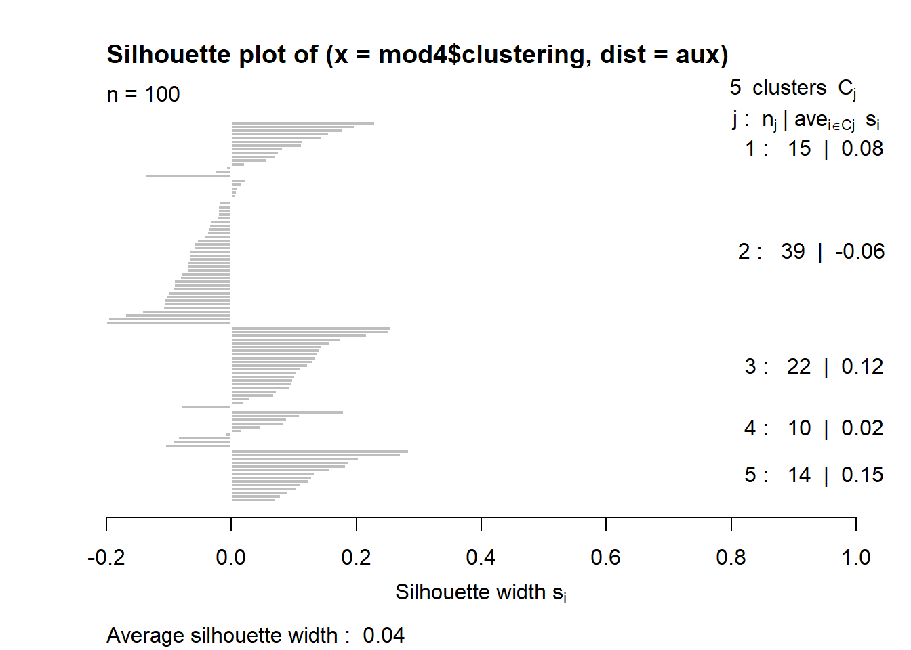
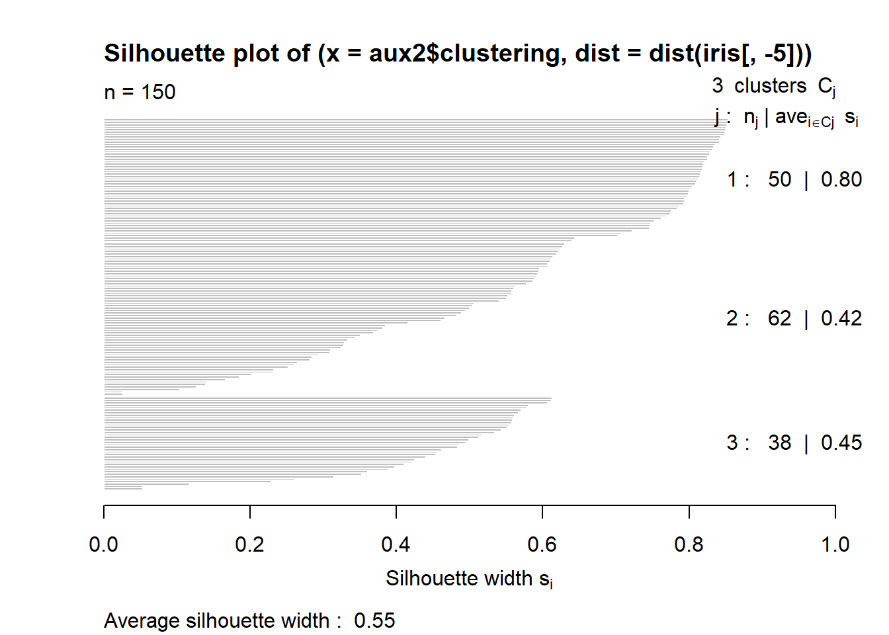

3 Clustering
El clustering es un método cuyo objetivo es el de crear grupos en base a las relaciones multivariantes que existen en los datos, este método es un método previo a las técnicas de clasificación que existen. La base del clustering es la definición de la similaridad entre las filas. Similaridad es definida como una función de distancia entre un par de filas.
Es importante distinguir la existencia de grupos naturales dentro de los datos, normalmente estos grupos son características naturales de las observaciones de interés.
3.1 Medidas de Disimilaridad
Dado el objetivo del clustering, el aspecto mas importante dentro de estos métodos es utilizar de forma correcta la medida de (di)similaridad entre un para de casos dentro de la base de datos.
La definición de las medidas de distancia es crucial para aplicar estos modelos. Funciones de distancia incorrecta pueden generar sesgos en los resultados y ser un problema para etapas posteriores de la mineria de datos. Debemos distinguir las funciones de distancia según la naturaleza de las variables.
Sean las filas \(x\) e \(y\) dentro de una base de datos, estos vectores tienen una dimensión \(p\), es decir, se observan \(p\) variables para las 2 observaciones.
3.1.1 Distancia Euclideana: Variables numéricas
\[d(x,y)=\sqrt{\sum_{i=1}^p{(x_i-y_i)^2}}\]
Donde los \(x_i\) y \(_y_i\) son los valores para la variable \(i\) de las observaciones \(x\) e \(y\).
3.1.2 Distancia Manhattan: \(p\) grande
\[d(x,y)=\sum_{i=1}^p{|x_i-y_i|}\]
3.1.3 Distancia Minkowski
\[d(x,y)=\left(\sum_{i=1}^p{|x_i-y_i|^d}\right)^{1/d}\]
## [1] 4.828883## [1] 13.65275mink<-function(x,y,d){
aux<-sum(abs(x-y)^d)^(1/d)
return(aux)
}
x1<-rnorm(10)
y1<-rnorm(10)
mink(x=x1,y=y1,d=0.5)## [1] 85.76253## 1 2 3 4
## 2 5.620481
## 3 4.999371 5.545902
## 4 5.276834 5.224085 5.739026
## 5 4.897327 6.035392 5.696445 4.539914## 1 2 3 4
## 2 22.15789
## 3 17.53638 22.29123
## 4 20.06987 17.65211 20.32808
## 5 15.99389 23.53313 18.68370 15.97795## 1 2 3 4
## 2 3.764412
## 3 3.512567 3.630056
## 4 3.541395 3.860047 4.161141
## 5 3.557810 4.074700 4.166427 3.0938073.1.4 programando
minkowski<-function(x,y,d){
dd<-(sum(abs(x-y)**d))**(1/d)
return(dd)
}
minkowski(c(1,2,3),c(4,2,1),d=2)## [1] 3.605551## [1] 5## [1] 3.605551# la función de distancia
distancia<-function(bd,d=2){
nf<-dim(bd)[1]
DD<-matrix(NA,nf-1,nf-1)
colnames(DD)<-1:(nf-1)
rownames(DD)<-2:nf
for(i in 1:(nf-1)){
for(j in (i+1):nf){
DD[j-1,i]<-minkowski(bd[i,],bd[j,],d)
}
}
return(DD)
}
distancia(aux,d=2)## 1 2 3 4
## 2 5.620481 NA NA NA
## 3 4.999371 5.545902 NA NA
## 4 5.276834 5.224085 5.739026 NA
## 5 4.897327 6.035392 5.696445 4.539914## 1 2 3 4
## 2 5.620481
## 3 4.999371 5.545902
## 4 5.276834 5.224085 5.739026
## 5 4.897327 6.035392 5.696445 4.5399143.1.5 Variables cualitativas
Para las variables cualitativas se debe considerar los casos cuando estas son nominales y ordinales, distinguir tambien los casos de variables binarias.
3.2 Métodos de clustering
- Partición (k-center)
- Jerárquicos (dendograma)
- Basados en densidad
- Basados en cuadrículas (grid)
load(url('https://raw.githubusercontent.com/AlvaroLimber/EST-383/master/data/oct20.RData'))
aux<-matrix(rnorm(100),20,5)
aux1<-cbind(aux,rep(c(1,2,3,4),5))
aux2<-cbind(aux,c(rep(1,5),rep(2,5),rep(3,5),rep(4,5)))
aux3<-cbind(aux,sample(1:4,20,replace = T))
vmean<-rbind(colMeans(aux1[aux1[,6]==1,1:5]),
colMeans(aux1[aux1[,6]==2,1:5]),
colMeans(aux1[aux1[,6]==3,1:5]),
colMeans(aux1[aux1[,6]==4,1:5]))
colMeans(aux2[aux2[,6]==1,1:5])## [1] -0.3141031 0.6941139 0.2416709 -0.5686672 -0.8930634## [1] 0.1447913 -0.7786705 0.5137054 -0.4384427 -0.7212081## [1] -0.73616555 -0.21000035 -0.02794208 1.18010861 0.56784309## [1] 0.9101678 0.2680695 0.1813769 -0.9772059 0.1565090## [1] -0.2091440089 -0.0778936759 0.0518331112 -0.0000816898
## [5] 0.1453905505## [1] 0.07980738 -0.28949932 0.15094232 -0.19189242 -0.32074190## [1] 0.4066638 0.8438366 1.2227273 -0.7058193 -0.4189945## [1] -0.6378747 -0.2564106 -0.9822498 0.2648409 -0.3069473## 1 2 3 4
## 2 2.804768
## 3 2.441447 1.779359
## 4 2.418812 1.876594 1.058048
## 5 2.605279 1.328966 1.491997 1.2875863.3 K-center Clustering (no jerárquicos)
Algoritmo
- Definición del valor de \(k\).
- Partición de las observaciones en \(k\) grupos, obtener el vector de centros de cada grupo (centroides). Se puede trabajar con la media, la mediana o el medoide.
- Para cada observación calcular las distancia euclidiana (u otra) a los centroides y reasignar la observación en base a la menor distancia, re calcular los centroides en base a la re asignación de cada observación
- Repetir el paso 2 hasta que que ya no existan más re asignaciones
library(dplyr)
load(url('https://raw.githubusercontent.com/AlvaroLimber/EST-383/master/data/oct20.RData'))
# preparación de la base de datos
unique(computo$Elección)
bd<-computo %>% filter(País=="Bolivia" & Elección=="Presidente y Vicepresidente")#cobertura
#municipios
bdmun<-bd %>% group_by(Departamento, Provincia, Municipio) %>% summarise_at(vars(Inscritos:Nulos),sum)
#prop.table(as.matrix(bdmun[,5:13]),1)
bdmun[,5:13]<-bdmun[,5:13]/apply(bdmun[,5:13],1,sum)
#recintos
bdrec<-bd %>% group_by(Departamento, Provincia, Municipio,Localidad,Recinto) %>% summarise_at(vars(Inscritos:Nulos),sum)
# Modelado: K-center
mod1<-kmeans(bdmun[5:13],4)
bdmun<-cbind(bdmun,cl1=mod1$cluster)
mod2<-kmeans(bdmun[5:13],5)
bdmun<-cbind(bdmun,cl2=mod2$cluster)
table(bdmun$cl1)
table(bdmun$cl2)
table(bdmun$Departamento,bdmun$cl2)
bdmun %>% filter(cl1==1)
bdmun %>% filter(cl1==2)
bdmun %>% filter(cl1==3)
bdmun %>% filter(cl1==4)
mod1$centers
mod2$centers
library(ggplot2)
ggplot(bdmun,aes(x=`MAS - IPSP`,y=CC,size=Inscritos))+geom_point(aes(shape=as.factor(cl2)))
ggplot(bdmun,aes(x=`MAS - IPSP`,y=CC, colour=as.factor(cl2),size=Inscritos))+geom_point()
ggplot(bdmun,aes(x=`MAS - IPSP`,y=`21F`, colour=as.factor(cl2),size=Inscritos))+geom_point()
Hmisc::describe(t(mod2$centers))
scale()Ejemplo:
- Implementar el algoritmo para el k-center, con la distancia de Minkowski, para la media y mediana.
rm(list=ls())
library(dplyr)
set.seed(12345)
bd<-data.frame(matrix(rnorm(1000),100,10))
kcenter<-function(bd,k=2,distancia="euclidean",centro="media",semilla=12345){
#0. Definición del valor de $k$.
#k=6;distancia="euclidean";centro="media";semilla=12345
#1. Partición de las observaciones en $k$ grupos, obtener el vector de centros de cada grupo (centroides). Se puede trabajar con la media, la mediana o el medoide.
nf<-nrow(bd)
nc<-ncol(bd)
#bd$k<-rep(seq(1:3),ceiling(nf/k))[1:nf]
set.seed(semilla)
bd$k<-c(1:k,sample(1:k,nf-k,replace = T))
if(centro=="media"){
centros<-bd %>% group_by(k) %>% summarise_at(vars(1:nc),mean)
} else if(centro=="mediana"){
centros<-bd %>% group_by(k) %>% summarise_at(vars(1:nc),median)
}
#2. Para cada observación calcular las distancia euclidiana (u otra) a los centroides y reasignar la observación en base a la menor distancia, re calcular los centroides en base a la re asignación de cada observación
reasig<-1
while(reasig>0){
reasig<-0
for(i in 1:nf){
#i<-30
aux<-as.matrix(dist(rbind(bd[i,1:nc],centros[,-1]),method =distancia ))[-1,1]
rk<-as.numeric(which(aux==min(aux)))
#re asignación
if(rk!=bd$k[i]){
bd$k[i]<-rk
reasig<-reasig+1
if(centro=="media"){
centros<-bd %>% group_by(k) %>% summarise_at(vars(1:nc),mean)
} else if(centro=="mediana"){
centros<-bd %>% group_by(k) %>% summarise_at(vars(1:nc),median)
}
}
}
}
#3. Repetir el paso 2 hasta que que ya no existan más re asignaciones
return(list(k=bd$k,centros=centros))
}
set.seed(12345)
bdtest<-data.frame(matrix(rnorm(1000),100,10))
mod1<-kcenter(bdtest,k=5)# media
mod2<-kcenter(bdtest,k=5,centro = "mediana")
mod3<-kmeans(bdtest,5)
table(mod1$k)##
## 1 2 3 4 5
## 15 23 20 24 18##
## 1 2 3 4 5
## 19 12 27 16 26##
## 1 2 3 4 5
## 16 25 14 31 14#Nota: La entrada de la funcion es un data frame
kcenter<-function(bd,k=3,d=2,tipo="media",seed=123456){
nf<-dim(bd)[1]
nc<-dim(bd)[2]
#paso1: asignar las k (nf>=k)
set.seed(seed)
bd$k<-sample(1:k,nf,replace=T)
centroide<-NULL
for(i in 1:k){
if(tipo=="media"){
centroide<-rbind(centroide,apply(bd[bd$k==i,],2, mean))
} else if(tipo=="mediana"){
centroide<-rbind(centroide,apply(bd[bd$k==i,],2, median))
}
}
#paso2 (recalcular los centroides al final)
cc<-1
while(cc!=0){ #paso3
cc<-0
for(i in 1:nf){
auxd<-NULL
for(j in 1:k){
auxd<-c(auxd,minkowski(bd[i,1:nc],centroide[j,1:nc],d=d))
}
newk<-which(auxd==min(auxd))
if(newk!=bd$k[i]){
bd$k[i] <- newk
cc<-cc+1
}
}
centroide<-NULL
for(i in 1:k){
if(tipo=="media"){
centroide<-rbind(centroide,apply(bd[bd$k==i,],2, mean))
} else if(tipo=="mediana"){
centroide<-rbind(centroide,apply(bd[bd$k==i,],2, median))
}
}
}
return(bd)
}- Pensar en un gráfico que permita ver como se asignaron los cluster
## X1 X2 X3 X4 X5 X6
## 1 0.5855288 0.2239254 -1.4361457 0.52228217 0.627965113 -1.4203239
## 2 0.7094660 -1.1562233 -0.6292596 0.00979376 0.002143951 -2.4669386
## 3 -0.1093033 0.4224185 0.2435218 -0.44052620 0.284377723 0.4847158
## 4 -0.4534972 -1.3247553 1.0583622 1.19948953 -1.001779086 -0.9379723
## 5 0.6058875 0.1410843 0.8313488 -0.11746849 -0.617221929 3.3307333
## 6 -1.8179560 -0.5360480 0.1052118 0.03820979 0.828194239 -0.1629455
## X7 X8 X9 X10 k
## 1 -1.6366291 2.30362701 -0.8174921 -0.78486098 1
## 2 0.2115626 2.02089590 -0.2492659 -2.56005244 1
## 3 -0.4648317 -0.05787852 0.4629986 0.07280078 4
## 4 -0.6623572 0.44209338 0.6673264 0.75024358 4
## 5 -0.1329536 -1.30333114 0.4881699 -0.12824888 5
## 6 -1.3217017 -0.03522043 1.0764874 -0.48786673 33.3.1 Validación cluster
- La estructura de los cluster es aleatoria (¿funciona?)
- ¿Cómo definimos el valor de \(K\)?
Silhouette coefficient:
- Se obtiene para la observación \(i\) el promedio de distancia a todos los objetos en el mismo cluster (\(a_i\))
- Se obtiene para la observación \(i\) el promedio de distancia a todos los objetos de los otros clusters (\(b_i\))
- Se define a \(s_i\) como el coeficiente, con un recorrido entre \([-1,1]\), para cada observación \(i\)
\[s_i=\frac{b_i-a_i}{max(a_i,b_i)}\]
Idealmente se espera que \(a_i < b_i\) y los \(a_i\) cercanos a \(0\).
library(cluster)
aux<-dist(bdtest[,1:10])
#mod1
s1<-silhouette(mod1$k,aux)
#mod2
s2<-silhouette(mod2$k,aux)
#mod1
s3<-silhouette(mod3$cluster,aux)
##############################
mean(s1[,3]);mean(s2[,3]);mean(s3[,3])## [1] 0.06552794## [1] 0.07477204## [1] 0.09692723


#sobre la base IRIS
data("iris")
aux<-kmeans(iris[,-5],3)
s <- silhouette(aux$cluster, dist(iris[,-5]))
plot(s)
Medoide: es el punto de datos que es “menos diferente” de todos los otros puntos de datos. A diferencia del centroide, el medoide tiene que ser uno de los puntos originales.
## X1 X2 X3 X4 X5
## [1,] 0.8881394 0.63301734 0.04170917 0.3102550 -1.00572873
## [2,] -0.1093033 0.42241853 0.24352177 -0.4405262 0.28437772
## [3,] -0.6443284 0.32215158 -0.15019029 1.0196741 -0.56265483
## [4,] 1.0431436 -0.04904469 0.16428100 -0.1025805 -0.12739034
## [5,] 0.8168998 -0.50508981 0.31561282 -0.3157325 -0.01991974
## X6 X7 X8 X9 X10 k
## [1,] -0.03716272 -0.94568862 0.96937088 -0.4014458 -1.57807666 1
## [2,] 0.48471584 -0.46483173 -0.05787852 0.4629986 0.07280078 4
## [3,] 0.72606595 -0.05611997 -0.23970673 -0.8424122 -0.06072724 3
## [4,] -1.35020157 1.13604965 -1.00523739 0.1198710 -0.88433132 2
## [5,] 0.76745466 0.80289084 0.99795424 0.6830538 0.01196105 2## [1] 1 1 2 2 2 2 2 3 4 3 2 4 3 5 3 5 2 2 1 2 4 1 3 2 2 4 3 1 5 4 1 1 4
## [34] 5 2 3 4 3 5 2 3 3 3 2 3 5 2 1 4 3 2 5 5 2 2 2 2 5 1 2 2 2 3 5 2 2
## [67] 1 5 1 3 2 3 3 4 2 2 2 2 2 2 2 4 2 1 2 5 1 3 5 1 3 2 5 3 3 2 3 1 2
## [100] 2

- ¿Cuál es el número óptimo de \(k\)?
library(fpc)# Flexible Procedures for Clustering
sol <- pamk(iris[,-5], krange=2:10, criterion="asw", usepam=TRUE)
sol$nc## [1] 2## $pamobject
## Medoids:
## ID X1 X2 X3 X4 X5
## [1,] 93 1.8869469 0.7867958 -0.1903841 0.1195602 -0.2420959
## [2,] 3 -0.1093033 0.4224185 0.2435218 -0.4405262 0.2843777
## X6 X7 X8 X9 X10 k
## [1,] 0.8008613 -0.2500888 0.87061707 0.1199820 0.16194465 2
## [2,] 0.4847158 -0.4648317 -0.05787852 0.4629986 0.07280078 4
## Clustering vector:
## [1] 1 1 2 2 2 2 2 2 2 2 2 1 2 1 2 1 2 2 1 2 1 1 2 2 2 1 2 1 2 2 1 1 1
## [34] 1 2 2 2 2 1 2 2 2 2 2 2 1 2 1 2 2 2 1 1 2 2 2 2 1 1 2 2 2 2 1 2 2
## [67] 1 1 1 2 2 2 2 1 2 2 2 2 2 2 2 1 2 1 2 1 1 2 1 1 2 2 1 2 2 2 2 1 2
## [100] 2
## Objective function:
## build swap
## 3.2616 3.2616
##
## Available components:
## [1] "medoids" "id.med" "clustering" "objective" "isolation"
## [6] "clusinfo" "silinfo" "diss" "call" "data"
##
## $nc
## [1] 2
##
## $crit
## [1] 0.00000000 0.16134389 0.08751267 0.06872608 0.06846076 0.08024272
## [7] 0.07514533 0.06674595 0.07538168 0.094493113.3.2 Distancias para variables nominales (todas nominales)
En este caso la mejor estrategia es llevar las variables con sus categorias a variables binarias. Existen múltiples medidas de distancia para variables binarias, muchas de estas medidas son aproximaciones a las medidas mas conocidas. Entre ellas:
Sean las filas \(i\), \(j\) que contienen los valores binarios de las variables de estudio. Sea \(A\) el total de \(1\) que existe en \(i\), \(B\) el total de \(1\) que existe en \(j\) y sea \(J\) el total de casos en los que los \(1\) ocurren simultaneamente en \(i\) y \(j\).
- Euclideana
\[d_{ij}=\sqrt{A+B-2J}\] * Manhattan
\[d_{ij}=A+B-2J\] * Bray
\[d_{ij}=\frac{A+B-2J}{A+B}\]
- Binomial
\[d_{ij}=log(2)(A+B-2J)\]
aux<-rbind(c(0,0,0,0,1,1,1),c(1,0,1,0,0,1,1))
A<-sum(aux[1,])
B<-sum(aux[2,])
J<-sum(apply(aux, 2, sum)==2)
#euclideana
sqrt(A+B-2*J)## [1] 1.732051## [1] 3## [1] 0.4285714## [1] 2.079442## 1
## 2 0.4285714## 1
## 2 0.4285714#una base de datos mas grandes
set.seed(999)
aux1<-matrix(rbinom(200,1,0.4),nrow = 20)
vegdist(aux1,method = "binomial",binary = T)## 1 2 3 4 5 6
## 2 3.4657359
## 3 3.4657359 2.7725887
## 4 2.7725887 4.8520303 4.8520303
## 5 4.1588831 3.4657359 4.8520303 2.7725887
## 6 2.7725887 3.4657359 3.4657359 4.1588831 1.3862944
## 7 3.4657359 2.7725887 2.7725887 2.0794415 3.4657359 4.8520303
## 8 2.0794415 1.3862944 2.7725887 4.8520303 3.4657359 2.0794415
## 9 2.7725887 3.4657359 4.8520303 4.1588831 2.7725887 1.3862944
## 10 2.7725887 4.8520303 3.4657359 2.7725887 2.7725887 2.7725887
## 11 3.4657359 2.7725887 4.1588831 3.4657359 4.8520303 4.8520303
## 12 2.7725887 4.8520303 3.4657359 2.7725887 4.1588831 2.7725887
## 13 4.1588831 4.8520303 3.4657359 2.7725887 2.7725887 2.7725887
## 14 4.8520303 4.1588831 4.1588831 3.4657359 3.4657359 3.4657359
## 15 1.3862944 3.4657359 2.0794415 2.7725887 4.1588831 2.7725887
## 16 3.4657359 4.1588831 5.5451774 2.0794415 0.6931472 2.0794415
## 17 3.4657359 2.7725887 4.1588831 3.4657359 3.4657359 3.4657359
## 18 2.7725887 4.8520303 3.4657359 4.1588831 4.1588831 4.1588831
## 19 3.4657359 4.1588831 1.3862944 4.8520303 3.4657359 2.0794415
## 20 4.8520303 2.7725887 4.1588831 3.4657359 3.4657359 3.4657359
## 7 8 9 10 11 12
## 2
## 3
## 4
## 5
## 6
## 7
## 8 4.1588831
## 9 6.2383246 2.0794415
## 10 3.4657359 3.4657359 2.7725887
## 11 2.7725887 4.1588831 3.4657359 3.4657359
## 12 3.4657359 4.8520303 2.7725887 2.7725887 2.0794415
## 13 4.8520303 4.8520303 2.7725887 2.7725887 3.4657359 2.7725887
## 14 4.1588831 4.1588831 2.0794415 2.0794415 2.7725887 2.0794415
## 15 3.4657359 2.0794415 2.7725887 1.3862944 3.4657359 2.7725887
## 16 4.1588831 4.1588831 2.0794415 2.0794415 4.1588831 3.4657359
## 17 5.5451774 2.7725887 2.0794415 4.8520303 4.1588831 4.8520303
## 18 3.4657359 4.8520303 4.1588831 2.7725887 3.4657359 2.7725887
## 19 4.1588831 2.7725887 3.4657359 2.0794415 4.1588831 3.4657359
## 20 4.1588831 4.1588831 2.0794415 3.4657359 1.3862944 2.0794415
## 13 14 15 16 17 18
## 2
## 3
## 4
## 5
## 6
## 7
## 8
## 9
## 10
## 11
## 12
## 13
## 14 3.4657359
## 15 2.7725887 3.4657359
## 16 2.0794415 2.7725887 3.4657359
## 17 2.0794415 4.1588831 3.4657359 2.7725887
## 18 4.1588831 3.4657359 4.1588831 3.4657359 4.8520303
## 19 2.0794415 4.1588831 2.0794415 4.1588831 4.1588831 3.4657359
## 20 2.0794415 1.3862944 3.4657359 2.7725887 2.7725887 4.8520303
## 19
## 2
## 3
## 4
## 5
## 6
## 7
## 8
## 9
## 10
## 11
## 12
## 13
## 14
## 15
## 16
## 17
## 18
## 19
## 20 4.1588831## 1 2 3 4 5 6 7
## 2 2.236068
## 3 2.236068 2.000000
## 4 2.000000 2.645751 2.645751
## 5 2.449490 2.236068 2.645751 2.000000
## 6 2.000000 2.236068 2.236068 2.449490 1.414214
## 7 2.236068 2.000000 2.000000 1.732051 2.236068 2.645751
## 8 1.732051 1.414214 2.000000 2.645751 2.236068 1.732051 2.449490
## 9 2.000000 2.236068 2.645751 2.449490 2.000000 1.414214 3.000000
## 10 2.000000 2.645751 2.236068 2.000000 2.000000 2.000000 2.236068
## 11 2.236068 2.000000 2.449490 2.236068 2.645751 2.645751 2.000000
## 12 2.000000 2.645751 2.236068 2.000000 2.449490 2.000000 2.236068
## 13 2.449490 2.645751 2.236068 2.000000 2.000000 2.000000 2.645751
## 14 2.645751 2.449490 2.449490 2.236068 2.236068 2.236068 2.449490
## 15 1.414214 2.236068 1.732051 2.000000 2.449490 2.000000 2.236068
## 16 2.236068 2.449490 2.828427 1.732051 1.000000 1.732051 2.449490
## 17 2.236068 2.000000 2.449490 2.236068 2.236068 2.236068 2.828427
## 18 2.000000 2.645751 2.236068 2.449490 2.449490 2.449490 2.236068
## 19 2.236068 2.449490 1.414214 2.645751 2.236068 1.732051 2.449490
## 20 2.645751 2.000000 2.449490 2.236068 2.236068 2.236068 2.449490
## 8 9 10 11 12 13 14
## 2
## 3
## 4
## 5
## 6
## 7
## 8
## 9 1.732051
## 10 2.236068 2.000000
## 11 2.449490 2.236068 2.236068
## 12 2.645751 2.000000 2.000000 1.732051
## 13 2.645751 2.000000 2.000000 2.236068 2.000000
## 14 2.449490 1.732051 1.732051 2.000000 1.732051 2.236068
## 15 1.732051 2.000000 1.414214 2.236068 2.000000 2.000000 2.236068
## 16 2.449490 1.732051 1.732051 2.449490 2.236068 1.732051 2.000000
## 17 2.000000 1.732051 2.645751 2.449490 2.645751 1.732051 2.449490
## 18 2.645751 2.449490 2.000000 2.236068 2.000000 2.449490 2.236068
## 19 2.000000 2.236068 1.732051 2.449490 2.236068 1.732051 2.449490
## 20 2.449490 1.732051 2.236068 1.414214 1.732051 1.732051 1.414214
## 15 16 17 18 19
## 2
## 3
## 4
## 5
## 6
## 7
## 8
## 9
## 10
## 11
## 12
## 13
## 14
## 15
## 16 2.236068
## 17 2.236068 2.000000
## 18 2.449490 2.236068 2.645751
## 19 1.732051 2.449490 2.449490 2.236068
## 20 2.236068 2.000000 2.000000 2.645751 2.4494903.3.3 Distancias para variables mixtas (cuantitativas, nominales, ordinales)
Ejercicios
- Busque funciones en R que permitan calcular los k-center para variables mixtas y medoides
- Crear una función k-center para variables mixtas y alternativas para incluir el medoide.
3.4 Cluster Jerárquico
El objetivo es obtener una jerarquía de posibles soluciones que van desde un solo grupo a \(n\) grupos, donde \(n\) es el número de observaciones en el conjunto de datos.
3.4.1 Algoritmo (Johnson)
- Se inicia con \(n\) grupos y se genera una matriz de \(nxn\) de distancias, \(D=\{d_{ik}\}\)
- Buscar en la matriz de distancia los pares de cluster más cercanos entre ellos, “los cluster mas similares”, si definimos los clusters \(V\) y \(U\), estamos interesados en encontrar \(d_{UV}\)
- Unir los cluster \(U\) y \(V\), re etiquetar el nuevo cluster como \(UV\). Actualizar la matriz de distancias a) remover las filas y columnas correspondientes a \(U\) y \(V\) b) incluimos las nuevas filas y columnas para el nuevo cluster \(UV\).
- Repetimos el paso 2 y 3 un total de \(n-1\) veces.
El momento de definir el cluster más cercano, se puede emplear los siguientes enlaces:
- Single linkage (Enlace simple): Se elige al cluster más cercano, con la regla de que las distincia individual entre las observaciones dentro de los clusters es la más corta
- Complete linkage (Enlace completo): Se elige el cluster mas cercano, con la regla que las distancias individuales entre las observaciones dentro de los cluster es la más larga
- Average linkage (Enlace promedio): Se elige el cluster mas cercano, considerando el promedio de las distancias entre los cluster.
Nota: Se debe elegir la matriz de distancias acorde a la naturaleza de los datos, se recomienda:
- Todas Numéricas: Euclideana o Manhatan
- Todas nominales: Transformación a binarias y usar la distancia binomial
- Mixtas: Distancia de Gower
aux2<-matrix(rbinom(200,1,0.4),nrow = 20)
md<-vegdist(aux2,binary = T)
mod1<-hclust(md,method = "single")
mod2<-hclust(md,method = "complete")
mod3<-hclust(md,method = "average")
#dendograma
plot(mod1,main="single")
plot(mod2,main="complete")
plot(mod3,main="average")
plot(mod1,main="single",hang = -0.1,cex=0.8)
amod1<-cutree(mod1,5)
amod2<-cutree(mod2,5)
amod3<-cutree(mod3,5)
plot(mod1,main="single",hang = -0.1,cex=0.8)
rect.hclust(mod1,3)
plot(mod2,main="complete",hang = -0.1,cex=0.8)
rect.hclust(mod2,3)
plot(mod3,main="average",hang = -0.1,cex=0.8)
rect.hclust(mod3,4)
plot(silhouette(amod1,md))
plot(silhouette(amod2,md))
plot(silhouette(amod3,md))
d <- dist(scale(iris[,-5]))#euclideana
h <- hclust(d)
plot(h,hang=-0.1,labels=iris[["Species"]],cex=0.5)
#elegir la cantidad de grupos
clus3 <- cutree(h, 5)
plot(h,hang=-0.1,labels=iris[["Species"]],cex=0.5)
rect.hclust(h,k=5)Probando los tres tipos de enlaces para \(k=3\)
hs <- hclust(d,method = "single")
hc <- hclust(d,method = "complete")
ha <- hclust(d,method = "average")
cs<-cutree(hs,3)
cc<-cutree(hc,3)
ca<-cutree(ha,3)
table(cs,cc)
table(cs,ca)
table(cc,ca)
par(mfrow=c(1,3))
plot(hs,hang=-0.1,labels=iris[["Species"]],cex=0.5)
rect.hclust(hs,k=3)
plot(hc,hang=-0.1,labels=iris[["Species"]],cex=0.5)
rect.hclust(hc,k=3)
plot(ha,hang=-0.1,labels=iris[["Species"]],cex=0.5)
rect.hclust(ha,k=3)Nota: El dendograma es muy útil para ver las relaciones que existen basadas en las distancias y la creación de las jerarquias, a partir de estos se puede definir un \(k\) (de forma visual)
Nota: El dendograma pierde su utilidad cuando la cantidad de observaciones es muy alta,
Ejemplo, Usar los datos de las elecciones del 20 de octubre, agregar los resultados en términos relativos para los municipios y generar el dendograma para los tres tipos de enlaces, de forma visual sugerir un valor de \(k\) para cada tipo de enlace.
library(dplyr)
load("C:\\Users\\ALVARO\\Documents\\GitHub\\EST-384\\data\\oct20.RData")
#filtrar los casos
aux<-c("Número departamento","Departamento" ,"Número municipio","Municipio" ,"CC","FPV","MTS","UCS","MAS - IPSP","21F","PDC","MNR","PAN-BOL","Votos Válidos","Blancos","Nulos")
names(computo)[1]<-"pais"
names(computo)[12]<-"eleccion"
bd<-computo %>% filter(pais=="Bolivia" & eleccion=="Presidente y Vicepresidente") %>% select(aux)
names(bd)[1:4]<-c("idep","ddep","imun","dmun")
bdmun<-aggregate(bd[,5:16],bd[,1:4],sum)
bdmun<-bdmun[,-14]
bdmun[,5:15]<-prop.table(as.matrix(bdmun[,5:15]),1)
#cluster jerarquico
d<-dist(bdmun[,5:15])
plot(hclust(d),hang=-0.1,label=bdmun$dmun,cex=0.5)
# determinar el mejor k y el mejor enlace
mm<-c("single", "complete", "average") # método
k<-2:20 # cantidad de cluster
d<-dist(bdmun[,5:15]) # matriz de distancia
# matriz de resultados
res<-matrix(NA, nrow = 19,ncol=3)
colnames(res)<-mm
rownames(res)<-k
#######################
for(i in k){
for(j in 1:3){
h<-hclust(d,method = mm[j])
c<-cutree(h,i)
s<-silhouette(c,d)
res[i-1,j]<-median(s[,3])
}
}
#la mejor opción es k=2 con el método average
h<-hclust(d,method = "average")
c<-cutree(h,2)
plot(h,hang=-0.1,labels=bdmun$dmun,cex=0.4)
rect.hclust(h,k=2)
bdmun$cluster<-c
group_by(bdmun,cluster) %>% summarise(mean(CC),mean(`MAS - IPSP`))Algunas alternativas para la visualización son:
library(ape)
h$labels<-bdmun$dmun
plot(as.phylo(h),type="fan")
library(dendextend)
library(circlize)
dend <- as.dendrogram(h)
# modify the dendrogram to have some colors in the branches and labels
dend <- dend %>%
color_branches(k=4) %>%
color_labels
# plot the radial plot
png("dendo.png",width = 1500,height = 1500)
par(mar = rep(0,4))
# circlize_dendrogram(dend, )
circlize_dendrogram(dend,dend_track_height = 0.8)
dev.off()
3.5 Ejercicios
- Pensar en un gráfico que permita ver como se asignaron los cluster
- Pensar en optimizar el código empleado para el k-center
- Hacer que la función desarrollada para el k-center retorne también los centroides
- Utilizando la base de datos de las elecciones del 20 de octubre, crear una base de datos a nivel municipal, aplicar el método k-center con medoides para los resultados a nivel municipal y terminar el \(k\) óptimo en un rango de \(k=2:10\) (Usar datos relativos).